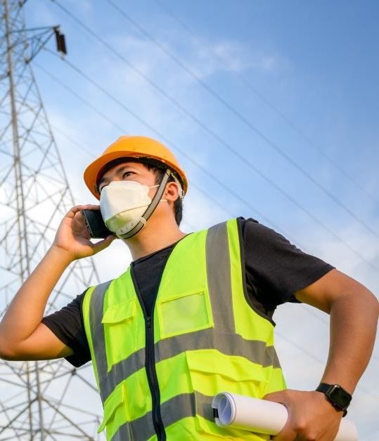

公司簡介
台電公司身為國營公用事業，肩負穩定供電、友善環境與維持合理成本電價之使命，以提供企業與民生發展所需基礎條件。在電業法通過後，開放綠能直供，與推動能源轉型逐步減核邁向114年非核家園之政府政策目標下，本公司將配合推動以下重點工作，力求穩定供電：
一、穩定電力供應
為滿足經濟發展所需電力，與核能機組將來陸續除役所導致之短期備轉容量偏低問題，原則上在夏季期間不安排機組大修，並要求各電廠如質如期完成機組大修、檢修工作，加強運轉維護，確保夏季供電能力。另持續推動需求面管理包括時間電價、減少用電措施、需量競價等負載管理措施來降低尖峰負載。
二、再生能源開發
積極推動與建置陸域風力、大型太陽能及離岸風力發電計畫，另為因應未來大量再生能源併網對系統之衝擊，將強化區域電網、建置快速起停機組及規劃抽蓄儲能系統等措施。
三、加強供電品質
本公司期許為智慧型電網的建構者，除透過發電端效率提升外，亦將逐步改善輸配電效率，推動配電端饋線自動化及環路供電建置，並將配合電力科技持續創新，規劃建構智慧型電網，期能進一步提高供電可靠度，並提供用戶加值服務，讓用戶能更智慧使用電能，達到節能減碳目的。
四、建立綠色企業
綠能、低碳、環保已是能源事業共同需要努力的課題，本公司除擴大再生能源投資，做好環境保護與生態保育，對於極端氣候所帶來之颱風、地震等，將推動相關電力建設之防災加強計畫如配電事故搶修困難區段，辦理電線電纜地下化工程。至於燃煤電廠空污改善部分，將透過提高環保設備投資比重，使新設燃煤機組污染排放接近天然氣機組標準；並在系統供電安全無虞、天然氣存量足夠及空氣品質惡化之前提下，配合降載，展現友善環境的作為。
五、落實顧客服務
本公司為讓用戶享有更高品質、更方便的電力服務，正藉由資訊科技提供客戶更多元化的服務，包括便捷的申請管道及繳費服務、提升客服中心服務品質、設置「1911」事故通報專線、研訂「服務品質標準」等，未來將不斷創新服務方式及品質，充分掌握顧客的期待，提供讓顧客驚喜的價值，以贏得顧客的心。
六、善盡社會責任
本公司以克盡「企業公民」的角色自我期許，深切瞭解企業發展要靠顧客的信賴及社會的支持，故在強化公司營運基礎，追求永續經營的同時，當善盡社會責任使社會變得更美好。將積極持續參與回饋社會公益及慈善活動。